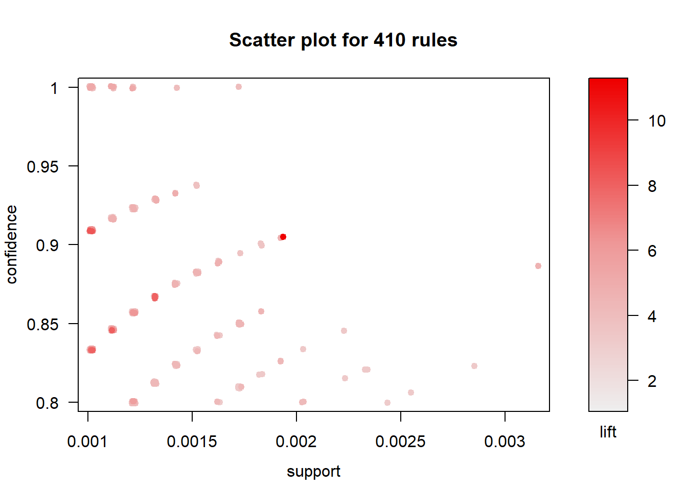

Chapter 2 Association Rules
2.1 Prerequisites
You need to have the following R packages installed and recalled into your library:
2.2 The Groceries Dataset
We shall mine Groceries dataset for association rules using the Apriori Algorithm. The Groceries dataset can be loaded from R. The steps for doing so are shown below. Note that you will only be able to load the data set once the package arules has been loaded into R. The Groceries dataset contains a collection of receipts with each line representing 1 receipt and the items purchased. Each line is called a transaction and each column in a row represents an item.
## transactions as itemMatrix in sparse format with
## 9835 rows (elements/itemsets/transactions) and
## 169 columns (items) and a density of 0.02609146
##
## most frequent items:
## whole milk other vegetables rolls/buns soda
## 2513 1903 1809 1715
## yogurt (Other)
## 1372 34055
##
## element (itemset/transaction) length distribution:
## sizes
## 1 2 3 4 5 6 7 8 9 10 11 12 13 14 15 16
## 2159 1643 1299 1005 855 645 545 438 350 246 182 117 78 77 55 46
## 17 18 19 20 21 22 23 24 26 27 28 29 32
## 29 14 14 9 11 4 6 1 1 1 1 3 1
##
## Min. 1st Qu. Median Mean 3rd Qu. Max.
## 1.000 2.000 3.000 4.409 6.000 32.000
##
## includes extended item information - examples:
## labels level2 level1
## 1 frankfurter sausage meat and sausage
## 2 sausage sausage meat and sausage
## 3 liver loaf sausage meat and sausageAs you can see, the data is in “transactions” format with a density of 0.0261 (check slides to remember what this value means). There are 9835 transactions with 169 distinct items that can be bought in this database (\(D\)).
The summary function also provides the distribution of number items per transaction and the most popular items.
Now let us examine the first 3 transactions in \(D\).
## items
## [1] {citrus fruit,
## semi-finished bread,
## margarine,
## ready soups}
## [2] {tropical fruit,
## yogurt,
## coffee}
## [3] {whole milk}The first customer bought {citrus fruit,semi-finished bread,margarine,ready soups}, whereas the third customer bought only {whole milk}.
We can also find how many items each transaction contains, for the first 10 transactions:
## [1] 4 3 1 4 4 5 1 5 1 2hist(size(Groceries), main = "Distribution of the number of items purchased", xlab = "Number of items", ylab="Number of Transactions")As it is clear, the distribution of the number of items is skewed to right, clearly most transactions inlcude fewer number of items, only very few have more than 10 items purchased together.
2.3 Support Count (Item Frequencies) and Item Frequency Plot
We can check the support count (\(freq(A)\)) for the top 25 products with the following R code:
itemSupportCount = itemFrequency(Groceries, type = "absolute") # obtain the counts for individual items
itemSupportCount = sort(itemSupportCount, decreasing = TRUE) # sort the counts in descending order
head(itemSupportCount, 25) # check the support count for the top 25 items## whole milk other vegetables rolls/buns
## 2513 1903 1809
## soda yogurt bottled water
## 1715 1372 1087
## root vegetables tropical fruit shopping bags
## 1072 1032 969
## sausage pastry citrus fruit
## 924 875 814
## bottled beer newspapers canned beer
## 792 785 764
## pip fruit fruit/vegetable juice whipped/sour cream
## 744 711 705
## brown bread domestic eggs frankfurter
## 638 624 580
## margarine coffee pork
## 576 571 567
## butter
## 545We can also plot the support count, it is possible to change the colours of the bars as well.
We can see that top purchased product is {whole milk} and it appears in 2513 transactions out of 9835. Therefore the support count for {whole milk} is 2513.
2.4 Support
Remember the support (\(S(A)\)) is calculated as follows:
\[S(A)=\frac{\texttt{freq({A})}}{n}\] The support for {whole milk} would be
\[S(\texttt{{whole milk}})=\frac{\texttt{freq({whole milk})}}{n}=\frac{2513}{9835}=25.55\%\]
It is possible to obtain this information with the same code as shown previously by simply replacing \(\texttt{type="absolute"}\) with the \(\texttt{type="relative"}\) option:
itemSupport = itemFrequency(Groceries, type = "relative") # obtain the counts for individual items
itemSupport = sort(itemSupport, decreasing = TRUE) # sort the counts in descending order
head(itemSupport, 25) # check the support count for the top 25 items## whole milk other vegetables rolls/buns
## 0.25551601 0.19349263 0.18393493
## soda yogurt bottled water
## 0.17437722 0.13950178 0.11052364
## root vegetables tropical fruit shopping bags
## 0.10899847 0.10493137 0.09852567
## sausage pastry citrus fruit
## 0.09395018 0.08896797 0.08276563
## bottled beer newspapers canned beer
## 0.08052872 0.07981698 0.07768175
## pip fruit fruit/vegetable juice whipped/sour cream
## 0.07564820 0.07229283 0.07168277
## brown bread domestic eggs frankfurter
## 0.06487036 0.06344687 0.05897306
## margarine coffee pork
## 0.05856634 0.05805796 0.05765125
## butter
## 0.05541434We can also plot the support.
Note that the maximum support is low. To ensure that the top 25 frequent items are included in the analysis the minimum support would have to be less than 0.10! (\(10\%\)) Suppose we set the minimum support to 0.001 and minimum confidence to 0.8. We can mine some rules by executing the following R code:
2.5 Rule Generation with Apriori Algorithm
We are going to use the Apriori algorithm within the \(\texttt{arules}\) library to mine frequent itemsets and association rules..
Assume that we want to generate all the rules that satisfy the support threshold of \(0.1\%\) and confidence threshold of \(80\%\), then we need to enter \(\texttt{supp=0.001}\) and \(\texttt{conf=0.8}\) values in the \(\texttt{apriori()}\) function. If you want stronger rules, you can increase the value of \(\texttt{conf}\) and for more extended rules give higher value to \(\texttt{maxlen}\).
It might be desirable to sort the rules according either confidence or support, here we chose sorting according to confidence in a descending manner.
Finally we can examine the rules using \(\texttt{summary()}\) function.
## Apriori
##
## Parameter specification:
## confidence minval smax arem aval originalSupport maxtime support minlen
## 0.8 0.1 1 none FALSE TRUE 5 0.001 1
## maxlen target ext
## 10 rules TRUE
##
## Algorithmic control:
## filter tree heap memopt load sort verbose
## 0.1 TRUE TRUE FALSE TRUE 2 TRUE
##
## Absolute minimum support count: 9
##
## set item appearances ...[0 item(s)] done [0.00s].
## set transactions ...[169 item(s), 9835 transaction(s)] done [0.00s].
## sorting and recoding items ... [157 item(s)] done [0.00s].
## creating transaction tree ... done [0.00s].
## checking subsets of size 1 2 3 4 5 6 done [0.02s].
## writing ... [410 rule(s)] done [0.00s].
## creating S4 object ... done [0.00s].## set of 410 rules
##
## rule length distribution (lhs + rhs):sizes
## 3 4 5 6
## 29 229 140 12
##
## Min. 1st Qu. Median Mean 3rd Qu. Max.
## 3.000 4.000 4.000 4.329 5.000 6.000
##
## summary of quality measures:
## support confidence coverage lift
## Min. :0.001017 Min. :0.8000 Min. :0.001017 Min. : 3.131
## 1st Qu.:0.001017 1st Qu.:0.8333 1st Qu.:0.001220 1st Qu.: 3.312
## Median :0.001220 Median :0.8462 Median :0.001322 Median : 3.588
## Mean :0.001247 Mean :0.8663 Mean :0.001449 Mean : 3.951
## 3rd Qu.:0.001322 3rd Qu.:0.9091 3rd Qu.:0.001627 3rd Qu.: 4.341
## Max. :0.003152 Max. :1.0000 Max. :0.003559 Max. :11.235
## count
## Min. :10.00
## 1st Qu.:10.00
## Median :12.00
## Mean :12.27
## 3rd Qu.:13.00
## Max. :31.00
##
## mining info:
## data ntransactions support confidence
## Groceries 9835 0.001 0.8In this output we are provided with the following information:
- There are 410 rules based on 0.001 support and 0.8 confidence thresholds.
- The distribution of the number of items in each rule (rule length distribution): Most rules are 4 items long.
We need use the \(\texttt{inspect()}\) function to see the actual rules.
## lhs rhs support confidence coverage lift count
## [1] {rice,
## sugar} => {whole milk} 0.001220132 1 0.001220132 3.913649 12
## [2] {canned fish,
## hygiene articles} => {whole milk} 0.001118454 1 0.001118454 3.913649 11
## [3] {root vegetables,
## butter,
## rice} => {whole milk} 0.001016777 1 0.001016777 3.913649 10
## [4] {root vegetables,
## whipped/sour cream,
## flour} => {whole milk} 0.001728521 1 0.001728521 3.913649 17
## [5] {butter,
## soft cheese,
## domestic eggs} => {whole milk} 0.001016777 1 0.001016777 3.913649 10If we look at the confidence we see that for the top 5 rules it is \(1\), this indicates \(100\%\) confidence:
\(100\%\) customers who bought “{rice, sugar}” end up buying “{whole milk}” as well.
\(100\%\) customers who bought “{canned fish, hygiene articles}” end up buying “{whole milk}” as well.
In the following section we will look at visualizing the rules.
2.5.1 Visualisation of the Rules
## To reduce overplotting, jitter is added! Use jitter = 0 to prevent jitter.The scatter plot of support and confidence of the top ten rules shows us that high confidence rules have low support values.
## To reduce overplotting, jitter is added! Use jitter = 0 to prevent jitter.
In the following section we will look at removing redundant rules.
2.5.2 Removing redundant rules
You may want to remove rules that are subsets of larger rules. Use the code below to remove such rules:
subset.rules <- which(colSums(is.subset(rules, rules)) > 1) # get subset rules in vector
# is.subset() determines if elements of one vector contain all the elements of other
length(subset.rules)## [1] 912.6 Using your own dataset stored as a csv file
You might want to use a dataset from a csv file. The format of this file should be as follows:
- Transactions in the rows (remember in our small example, we had 5 transactions.)
- Items per transaction should be entered separately in different columns (items were A, B, C, D, E, and F)
How the data looks like in csv format:
- The data should be extracted using the \(\texttt{read.transactions()}\) function.
slideExample <- read.transactions('C:/Users/01438475/Google Drive/UCTcourses/Analytics/UnsupervisedLearning/Arules/example.csv', format = 'basket', sep=',')
slideExample## transactions in sparse format with
## 5 transactions (rows) and
## 6 items (columns)## items
## [1] {A,D}
## [2] {A,B,C,E}
## [3] {B,C,D,F}
## [4] {A,B,C,D}
## [5] {A,B,D,F}## [1] 2 4 4 4 4I will leave all the rest for you to obtain.
2.7 References:
- R and Data Mining
- Susan Li - MBA
- Datacamp
- Dr Juwa Nyirenda’s lecture notes